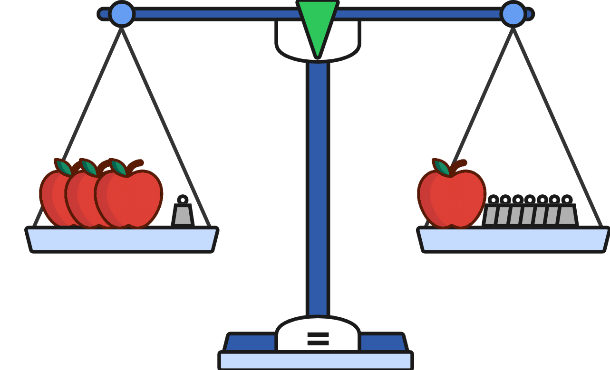
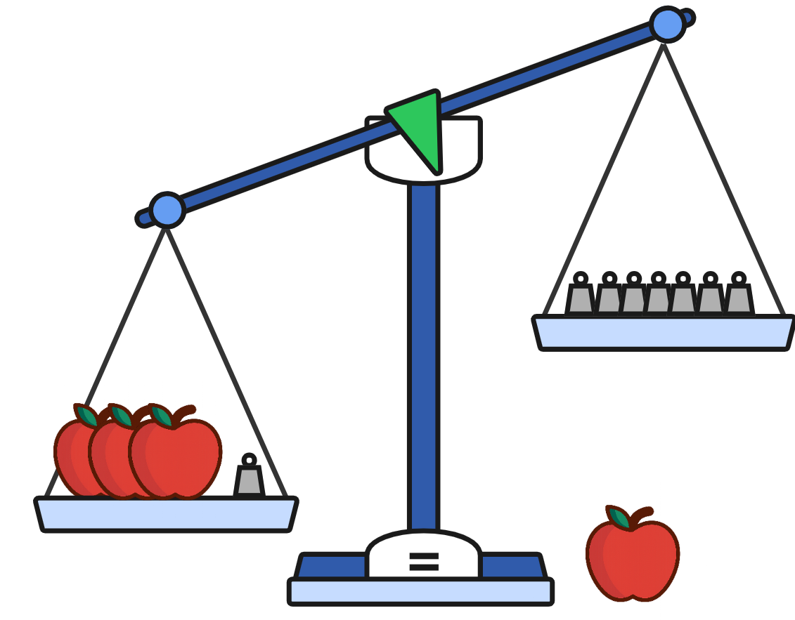
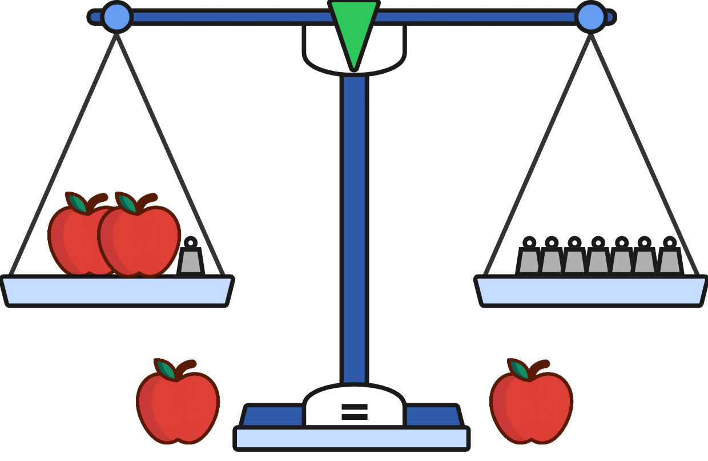
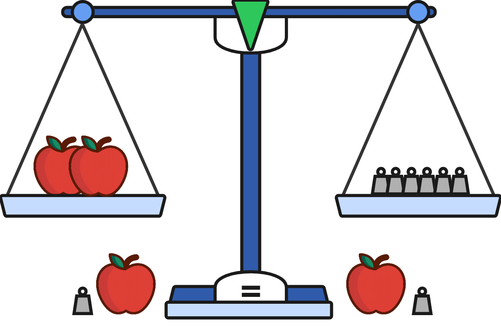
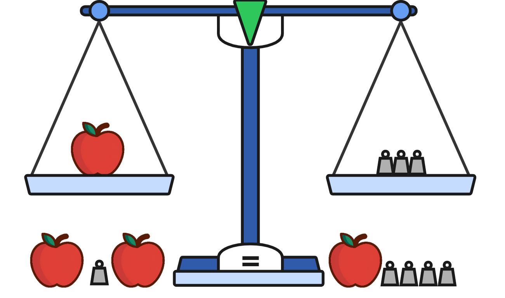

3.4 - Solving Equations With Variables on Both Sides
So far, every equation we solved had the variable on one side only. That made it clear where to “aim” our work, get the variable by itself on that side. But in real problems, equations aren’t always so neat. Sometimes the variable shows up on both sides of the equal sign.
In this lesson, you’ll learn how to bring all the variable terms together, simplify what’s left, and then solve.
🔥 Warm Up
Solve the equation \(5x - 2 = 13\).
Are \(3(5x - 1)\) and \(12x + 3(x - 1)\) equivalent?
Swanhilda solved the equation \(3(x-7)=3\) using the following steps. Did she solve it correctly?
\[ \begin{aligned} \textcolor{red}{3}(x - 7) &= 3 \\ 3x - 21 &= 3 \\ \\ 3x - 21 \textcolor{red}{+ 21} &= 3 \\ 3x &= 3 \\ \\ 3x \textcolor{red}{\div 3} &= 3 \textcolor{red}{\div 3} \\ x &= 1 \end{aligned} \]
👥 Learn Together
3.4.1 - The Basic Strategy
Up until now, the variable was always on one side of the equation. But sometimes we’ll see the variable appear on both sides. This adds a step to solving equations:
Get all the variables on one side and the numbers on the other.
Let’s use the apple-and-scale model to see how this works.
Example 1: How much does an apple weigh?
Here we have 3 apples and 1 weight on the left-hand side, and 1 apple and 7 weights on the right-hand side.

\[ 3a + 1 = a + 7 \]
To find the weight of an apple, we need apples on one side and weights on the other. We start by removing an apple from the right pan.

\[ \begin{aligned} 3a + 1 &= a + 7 \textcolor{red}{- a}\\ 3a + 1 &= 7 \quad \textcolor{red}{\text{(false: not done to both sides)}} \end{aligned} \]
The scale lost its balance! Always remember to do the same thing to both sides of the equation!
It can’t be said enough, what you do to one side of an equation, you must do to the other side. Otherwise the equation will no longer be in balance and you will get the wrong answer.
Instead of removing an apple from just the right pan, we remove one from both pans. Removing an apple from both sides keeps the balance.

\[ \begin{aligned} 3a + 1 \textcolor{red}{- a} &= a + 7 \textcolor{red}{- a} \\ 2a + 1 &= 7 \end{aligned} \]
Now we just have a two-step equation!
Step 1: Remove a weight from both pans.

\[ \begin{aligned} 2a + 1 \textcolor{red}{-1} &= 7 \textcolor{red}{-1} \\ 2a &= 6 \end{aligned} \]
Step 2: Take half of what is in each pan.

\[ \begin{aligned} 2a \textcolor{red}{\div 2} &= 6 \textcolor{red}{\div 2} \\ a &= 3 \end{aligned} \]
An apple has a weight of 3.
Example 2: Apples to algebra
Now let’s try solving one with just algebra. Instead of apples, we have x’s. Instead of weights, we have numbers.
Solve \(4x + 5 = 2x + 9\).
\[ \begin{aligned} 4x + 5 &= 2x + 9 \\ \\ 4x + 5 \textcolor{red}{- 2x} &= 2x + 9 \textcolor{red}{- 2x} \snminus{2x} \\ 2x + 5 &= 9 \\ \\ 2x + 5 \textcolor{red}{- 5} &= 9 \textcolor{red}{- 5} \snminus{5} \\ 2x &= 4 \\ \\ 2x \textcolor{red}{\div 2} &= 4 \textcolor{red}{\div 2} \sndiv{2} \\ x &= 2 \end{aligned} \]
\[ \begin{aligned} 5x + 3 &= 2x + 12 \\ \\ 5x + 3 \textcolor{red}{- 2x} &= 2x + 12 \textcolor{red}{- 2x} \snminus{2x} \\ 3x + 3 &= 12 \\ \\ 3x + 3 \textcolor{red}{- 3} &= 12 \textcolor{red}{- 3} \snminus{3} \\ 3x &= 9 \\ \\ 3x \textcolor{red}{\div 3} &= 9 \textcolor{red}{\div 3} \sndiv{3} \\ x &= 3 \end{aligned} \]
3.4.2 - Simplifying Before Solving
Not every equation is ready to solve right away. Sometimes, each side of the equation has parentheses or extra terms that must be simplified first. The strategy is:
- Simplify both sides (distribute, combine like terms).
- Get all variables on the left side.
- Solve as usual.
Example 3: Simplifying with distribution
Solve \(2(x + 3) = 3x + 1\).
\[ \begin{aligned} \textcolor{red}{2}(x + 3) &= 3x + 1 \stepnote{Distribute the 2} \\ 2x + 6 &= 3x + 1 \\ \\ 2x + 6 \textcolor{red}{- 3x} &= 3x + 1 \textcolor{red}{- 3x} \snminus{3x} \\ -x + 6 &= 1 \\ \\ -x + 6 \textcolor{red}{- 6} &= 1 \textcolor{red}{- 6} \snminus{6} \\ -x &= -5 \\ \\ -x \textcolor{red}{\div -1} &= 1 \textcolor{red}{\div -1} \sndiv{-1} \\ x &= 5 \end{aligned} \]
Example 4: Simplifying by combining like terms
Solve \(4x + 6 + x = 2x + 12\).
\[ \begin{aligned} \textcolor{blue}{4x} + 6 + \textcolor{blue}{x} &= 2x + 12 \stepnote{Combine like terms} \\ \textcolor{blue}{5x} + 6 &= 2x + 12 \\ \\ 5x + 6 \textcolor{red}{- 2x} &= 2x + 12 \textcolor{red}{- 2x} \snminus{2x} \\ 3x + 6 &= 12 \\ \\ 3x + 6 \textcolor{red}{- 6} &= 12 \textcolor{red}{- 6} \snminus{6} \\ 3x &= 6 \\ \\ 3x \textcolor{red}{\div 3} &= 6 \textcolor{red}{\div 3} \sndiv{3} \\ x &= 2 \end{aligned} \]
Example 5: Simplifying with distribution and like terms
Solve \(3(x - 2) + 4 = 2(x + 1)\).
\[ \begin{aligned} \textcolor{red}{3}(x - 2) + 4 &= \textcolor{red}{2}(x + 1) \stepnote{Distribute both sides}\\ 3x - 6 + 4 &= 2x + 2 \\ \\ 3x \textcolor{blue}{- 6} + \textcolor{blue}{4} &= 2x + 2 \stepnote{Combine like terms} \\ 3x \textcolor{blue}{- 2} &= 2x + 2 \\ \\ 3x - 2 \textcolor{red}{- 2x} &= 2x + 2 \textcolor{red}{- 2x} \snminus{2x} \\ x - 2 &= 2 \\ \\ x - 2 \textcolor{red}{+ 2} &= 2 \textcolor{red}{+ 2} \snplus{2} \\ x &= 4 \end{aligned} \]
\[ \begin{aligned} 2(x + 4) &= x + 10 \stepnote{Distribute the 2} \\ 2x + 8 &= x + 10 \\ \\ 2x + 8 \textcolor{red}{- x} &= x + 10 \textcolor{red}{- x} \snminus{x} \\ x + 8 &= 10 \\ \\ x + 8 \textcolor{red}{- 8} &= 10 \textcolor{red}{- 8} \snminus{8} \\ x &= 2 \end{aligned} \]
When solving an equation with variables on both sides:
Simplify each side using the distributive property and combining like terms
Move the variables to the left side
Move the constants to the right side
Solve for the variable
Check your solution
3.4.3 - Word Problems with Variables on Both Sides
When two different plans or expressions both describe the same total, we often get equations with the variable on both sides. Simplify each side (distribute, combine like terms), then move all variable terms to one side.
Example 6: Two pay plans
Alex earns a $6 bonus plus $15 per hour. Blair earns a $18 bonus plus $12 per hour. After how many hours will they earn the same amount?
Let \(h\) be the number of hours.
\[ 15h + 6 = 12h + 18 \]
Solve:
\[ \begin{aligned} 15h + 6 \textcolor{red}{-12h} &= 12h + 18 \textcolor{red}{-12h} \snminus{12h} \\ 3h + 6 &= 18 \\ \\ 3h + 6 \textcolor{red}{-6} &= 18 \textcolor{red}{-6} \snminus{6} \\ 3h &= 12 \\ \\ 3h \textcolor{red}{\div 3} &= 12 \textcolor{red}{\div 3} \sndiv{3} \\ h &= 4 \end{aligned} \]
They earn the same after 4 hours.
Example 7: Equal perimeters
Two rectangles have the same perimeter.
- Rectangle A: length \(x + 6\), width \(x + 2\)
- Rectangle B: length \(2x - 1\), width \(x + 3\)
Find \(x\).
Perimeter: \(P = 2(\text{length} + \text{width})\).
\[ 2\big((x+6) + (x+2)\big) = 2\big((2x-1) + (x+3)\big) \]
Distribute and simplify:
\[ \begin{aligned} 2(2x + 8) &= 2(3x + 2) \stepnote{Distribute both sides} \\ 4x + 16 &= 6x + 4 \\ \\ 4x + 16 \textcolor{red}{- 6x} &= 6x + 4 \textcolor{red}{- 6x} \snminus{6x} \\ -2x + 16 &= 4 \\ \\ -2x + 16 \textcolor{red}{- 16} &= 4 \textcolor{red}{- 16} \snminus{16} \\ -2x &= -12 \\ \\ -2x \textcolor{red}{\div -2} &= -12 \textcolor{red}{\div -2} \sndiv{-2} \\ x &= 6 \end{aligned} \]
So \(x = 6\).
Example 8: Two vendors, same total
Vendor A sells sweatshirts for $18 each, includes 2 free, and charges $12 shipping. Vendor B sells sweatshirts for $15 each with a flat $42 shipping. For how many sweatshirts do the totals match?
Let \(s\) be the number of sweatshirts ordered.
Vendor A total: pay for \((s-2)\) shirts (because 2 are free) and add $12 shipping
\[ 18(s - 2) + 12 \]
Vendor B total: \[ 15s + 42 \]
Set them equal:
\[ 18(s - 2) + 12 = 15s + 42 \]
Distribute and solve:
\[ \begin{aligned} 18(s - 2) + 12 &= 15s + 42 \stepnote{Distribute the 18} \\ 18s - 36 + 12 &= 15s + 42 \\ \\ 18s \textcolor{blue}{- 36} \textcolor{blue}{+ 12} &= 15s + 42 \stepnote{Combine like terms} \\ 18s \textcolor{blue}{- 24} &= 15s + 42 \\ \\ 18s - 24 \textcolor{red}{- 15s} &= 15s + 42 \textcolor{red}{- 15s} \snminus{15s} \\ 3s - 24 &= 42 \\ \\ 3s - 24 \textcolor{red}{+ 24} &= 42 \textcolor{red}{+ 24} \snplus{24} \\ 3s &= 66 \\ \\ 3s \textcolor{red}{\div 3} &= 66 \textcolor{red}{\div 3} \sndiv{3} \\ s &= 22 \end{aligned} \]
The totals match at 22 sweatshirts.
Plan A costs $8 per month plus $3 per premium movie. Plan B costs $2 per month plus $5 per premium movie. For how many premium movies will the plans cost the same in a month?
Let \(m\) be the number of premium movies.
\[ 8 + 3m = 2 + 5m \]
\[ \begin{aligned} 8 + 3m \textcolor{red}{-5m} &= 2 + 5m \textcolor{red}{-5m} \snminus{5m} \\ 8 - 2m &= 2 \\ \\ 8 - 2m \textcolor{red}{-8} &= 2 \textcolor{red}{-8} \snminus{8} \\ -2m &= -6 \\ \\ -2m \textcolor{red}{\div -2} &= -6 \textcolor{red}{\div -2} \sndiv{-2} \\ m &= 3 \end{aligned} \]
They match at 3 movies.
✍️ Practice On Your Own
Basic
\(5x + 3 = 2x + 12\)
\(7y - 4 = 3y + 12\)
\(9 + 2n = 5n - 3\)
\(4x + 5 = 2x + 13\)
\(3m + 8 = m + 14\)
Negatives & Larger Numbers
\(10x - 7 = 4x + 11\)
\(12y + 3 = 5y + 31\)
\(-3x + 7 = 2x - 8\)
\(15n + 7 = 9n + 25\)
\(18x - 12 = 6x + 24\)
Simplify One Side First
\(3(x + 2) = 2x + 14\)
\(5(y - 4) + 2 = 3y - 6\)
\(2(n + 5) + n = 4n + 3\)
\(4(x - 1) + 3 = 2x + 5\)
\(6m + 4 + 2m = 3m + 19\)
Distribution on Both Sides
\(2(x + 3) = 3(x - 1)\)
\(4(y - 2) + 5 = 2(y + 6)\)
\(3(n - 4) = 2(n + 1) + 5\)
\(2(x + 5) - 3 = 3(x - 1) + 4\)
\(5(2m - 1) = 3(m + 7) - m\)
Word Problems
Competing Streaming Plans
- Plan A charges $10 per month plus $4 per movie.
- Plan B charges $6 per month plus $5 per movie.
After how many movies will the total monthly cost be the same?
Two Lawn Services
- Service A charges $25 per visit plus $15 per hour of mowing.
- Service B charges $40 per visit plus $10 per hour.
After how many hours will the total costs be equal?
Equal Sides, Different Expressions
- Two sides of a trapezoid are equal in length.
- The first side measures \(4x + 3\) cm.
- The second side measures \(2(x + 6)\) cm.
Find the value of \(x\) that makes the sides equal.
Challenge Problems
Stage Builder Showdown
Two contractors are bidding to build a concert stage.
- Contractor A charges a $1,200 setup fee plus $35 for every square meter more than the base design.
- Contractor B charges $50 per square meter but offers a $300 discount if the stage is small.
For what size of stage (in square meters beyond the base design) will their total prices be the same?
Solve for \(x\) in terms of \(y\).
\[ 3(x + 2) + 4y = 2(x - y) + 10 \]
\(x = 3\)
\(y = 4\)
\(n = 4\)
\(x = 4\)
\(m = 3\)
\(x = 3\)
\(y = 4\)
\(x = 3\)
\(n = 3\)
\(x = 3\)
\(x = 8\)
\(y = 6\)
\(n = 7\)
\(x = 3\)
\(m = 3\)
\(x = 9\)
\(y = 7.5\)
\(n = 19\)
\(x = 6\)
\(m = 3.25\)
The plans cost the same after 4 movies
They cost the same after 3 hours
\(x=4.5\). Both sides are 21 cm in length